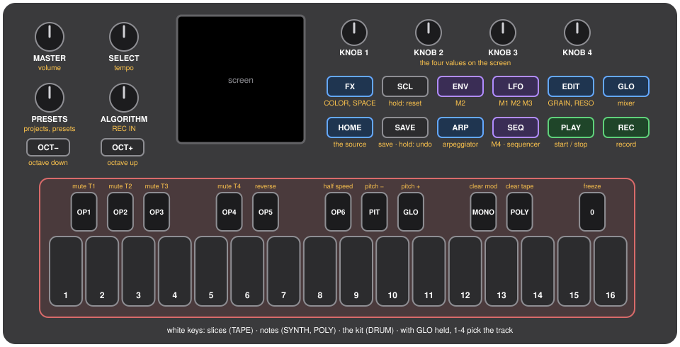
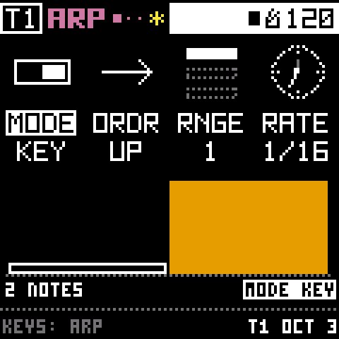

01Overview
Bryo turns the M-VAVE FM-1 into a four-track instrument for sculpting sound. Each track has a source (a tape loop, a synth, a sampler or a drum machine) and runs through four effects in a fixed order: GRAIN, RESONATOR, COLOR, SPACE. Four modulators per track can move any knob, and an arpeggiator can play your chords for you.
There are no menus. You hold a pad and turn a knob. I built it that way because menus are where ideas go to die mid-jam: if the four knobs always change the four values on screen, your hands never have to stop and look for anything.
Phases 1 to 9 of 10 are built, and it runs on a real FM-1 since 2026-10-10. The hardware checkpoint is under way. The details are in bryo-status.md.
02Install
There's no released Bryo package yet, so for now you build it and install your own. Bryo keeps Felucca's update loader byte for byte, which is why installing it works exactly like installing Felucca, and why the FM-1 can always be put back.
1. Build the package
The device build needs JieLi's toolchain (Linux x86-64; on a Mac it runs in a linux/amd64 container) and three files from the AC79 SDK. BUILDING.md has the full setup. Once that's in place:
git clone https://github.com/thoughtgrain/moss-and-air.git
cd moss-and-air/bryo
tools/get_toolchain.sh # installs to ~/.jieli/toolchain
./build.sh # makes build/bryo.fwsc2. Install from the command line
The installer talks to the FM-1 over MIDI, so it needs two Python packages.
pip3 install mido python-rtmidi
python3 tools/fm1_install.py --info # check which FM-1 is connected
python3 tools/fm1_install.py build/bryo.fwscOr from the web installer
Web MIDI only works in a secure context, so serve a local copy of the installer from localhost and open it in Chrome or Edge:
python3 web/make_site.py build/bryo.fwsc dev /tmp/bryo-site
cd /tmp/bryo-site && python3 -m http.server 8000
# open http://localhost:8000/webapp/installer/Installing firmware is at your own risk. If an install fails and the FM-1 no longer starts, recovery needs FM-1-transporter. To go back to the stock firmware, use M-VAVE's updater (Bryo's projects and tapes can't be opened there).
03The panel

- Top left: MASTER (volume), SELECT (tempo), PRESETS (projects and presets), ALGORITHM (what REC records). Under them, OCT− and OCT+.
- Top right: KNOB 1 to 4. They always change the four values on screen.
- Blue pads, the pages: HOME (the track's source), EDIT (GRAIN, RESONATOR), FX (COLOR, SPACE), GLO (the mixer).
- Purple pads, the modulators: LFO holds M1 to M3, SEQ is M4 (a step sequencer), ENV is the track's own envelope. ARP is the arpeggiator.
- Green pads, the transport: PLAY and REC. SAVE saves (held: undo). SCL held resets things.
- Keys: 16 white keys play the track. The 11 black keys above them are mutes, reverse, clears and freeze.
04Reading the screen
The header shows the track (T1 to T4), the page's name with dots for which of its pages you're on, then the transport (■ stopped, ▶ playing, ● armed) and the tempo. A ✱ means there are changes you haven't saved. Under that come the four knobs, each a little picture with a 4-letter name and a value, and the last one you turned has its name inverted.
The screen is white on black, and colour only ever says two things: where you are and what's alive. Everything a colour says is also said by a shape or a word, so you never need to tell the colours apart.
| Colour | Means |
|---|---|
| Blue | A page of the blue pads (HOME, EDIT, FX, GLO) |
| Purple | A modulator's page, or a knob a modulator moves |
| Orange | Sound happening now: grains, strings, echoes, the playhead, the meters |
| Red | Recording; the CPU near its limit |
| Yellow | Something to know: not saved, FROZEN, grains HELD |
05First sounds
- Turn it on. BRYO shows for a moment, then you're on track 1's TAPE page. Don't hold OCT− and OCT+ while it starts: that's the calibration.
- Press PLAY. You hear the factory scene: a drum machine that varies itself, FM bells on the arpeggiator, a drone through ringing strings, and wavefolded plucks into an echo. All in A minor.
- Turn SELECT for the tempo (40 to 240 BPM) and MASTER for the volume. Both work on every page.
- Press black keys OP1 to OP4 to mute and unmute tracks 1 to 4.
- Hold GLO and press white key 2 to move to track 2. Almost everything changes the track you're on.
06Pages
Every pad opens a page, and pressing the same pad again goes to its next page, then round to the first. To jump straight to one, hold its pad and press a white key: while you hold it, one key glows for each page.
| Pad | Pages, in order |
|---|---|
| HOME | The source's pages (TAPE 4, SYNTH 5, POLY 4, DRUM 4). Held + SELECT changes the source. |
| EDIT | GRAIN 1–6, then RESONATOR 1–3 |
| FX | COLOR 1–3, then SPACE 1–4 |
| ENV | The source's envelope (DRUM: its KIT) |
| LFO, SEQ | A modulator's pages (LFO: M1, M2 or M3; SEQ: M4) |
| ARP | The arpeggiator: 2 pages, then RES ARP |
| GLO | The mixer; EDIT then steps through CHANNEL, MASTER, KEY, SETUP |
Modulation in one move
Hold LFO, ENV or SEQ and turn any knob on a source, effect or channel page. That sets how far the modulator moves it (−100 to 100 %). Hold LFO + SELECT to change the slot's engine (LFO, ADSR, FOLLOW); the depths stay.


07Recording
REC records onto the track you're on. On a TAPE track it records the other three playing, which is how you bounce a scene down and keep building on it. ALGORITHM changes what each track's REC hears (AUTO, the others, one track, itself).
- Pick track 2 (hold GLO + white key 2).
- Hold black key POLY for half a second to clear its tape. The screen warns you first; let go early and nothing happens.
- Press PLAY, then REC. The header shows ● and the tape grows while it records.
- Press REC again after 10 to 15 seconds. Track 2 now loops what the others played.
Hold REC and press SELECT to record exactly N bars, which is what you want for drum loops. Changed your mind about a clear? Hold SAVE.
Manual 4 >08Saving and undo
- Nothing is kept until you tap SAVE. It saves everything (every knob, source, pattern, depth, the mixer, the tempo) into the current project, P1 to start with. A recorded tape goes into a user reel named after it, like
P1T2. - Hold SAVE to undo the last clear, reset or load.
- Turn PRESETS for the six project slots: OCT+ loads, SAVE saves, POLY held deletes, OCT− leaves. An empty slot + OCT+ starts a blank project; past P6, FACTORY brings back the factory scene.
- Track presets (A to H, plus eight factory ones) keep one track's sound: PRESETS, then EDIT.
Saving while it plays doesn't stop the sound. When there's a new recording to write, it fades out for a moment and back in. Bryo gets the next save ready in a quiet moment, when nothing sounds, so a save mid-set stays short.
Manual 9 >09With a computer
Files
Plugged in, the FM-1 shows up as a small drive called BRYO.
TAPE1.WAVtoTAPE4.WAVare what each track plays. Copy them off to keep them.- Copy a WAV on named
TAPE2.WAVto replace track 2's tape. - Any other name becomes one of six user reels (up to 21.5 s).
- Eject and plug back in to see new files. Deleting a file on the computer doesn't delete the sound; do that on the REELS page.
Record what the computer plays
With the transport stopped, hold REC for a second. Pick Bryo as the computer's sound output, then REC starts and stops a take (up to 23.6 s). Trim it with STRT and LEN, set GAIN and FADE, pick the track with white key 1 to 4, and REC keeps it. HOME goes back a step.
Manual 10 >10When something goes wrong

- A red BRYO CRASH screen: it restarts by itself after 4 seconds. Anything unsaved is gone; saved projects, reels and settings stay. A freeze restarts after 8 seconds (the watchdog). Two crashes within 30 seconds of power-on and it starts in update mode, so it can be reinstalled instead of looping.
- UPDATE MODE IN 3…: you're holding OCT− and OCT+ together. Five seconds puts it in update mode. Let go to cancel.
- A calibration screen: OCT− and OCT+ were held at power-on. Follow the screen, or turn it off and on.
If you hit a crash, please write down what you were doing and open an issue. It's the fastest way to find the bug.
Manual 11 >11Quick reference
| Do this | To |
|---|---|
| PLAY | Start / stop |
| SELECT | Tempo |
| MASTER | Volume |
| GLO held + white key 1–4 | Pick a track |
| GLO held + KNOB 1–4 | Track levels |
| GLO held + SELECT | How many tracks are on |
| GLO tapped, then EDIT | CHANNEL, MASTER, KEY, SETUP |
| OP1–OP4 | Mute tracks |
| OP5 / OP6 | Tape backwards / half speed |
| HOME | The source's pages |
| HOME held + SELECT | Change the source |
| EDIT | GRAIN, then RESONATOR |
| FX | COLOR, then SPACE |
| ENV | The source's envelope page |
| LFO / SEQ tapped | That modulator's pages |
| LFO / SEQ held + a knob | How much that modulator moves the knob |
| LFO held + OP1 / OP2 / OP3 | Which modulator LFO is: M1, M2, M3 |
| LFO held + SELECT | The modulator's engine |
| ARP | The arpeggiator; page 3 is RES ARP |
| GLO held + OCT+ | Black keys: shortcuts or notes |
| REC | Record onto the track |
| REC held 1 s, stopped | Record the computer |
| ALGORITHM | What REC records |
| Black POLY held | Clear the tape (DRUM: the pattern) |
| Black MONO held | Clear the track's modulation |
| Black 0 | Freeze GRAIN (held, or tapped to latch) |
| SCL held + a knob | That knob to its default |
| SCL held + the lit pad | The page to its defaults |
| SAVE | Save the project |
| SAVE held | Undo the last clear, reset or load |
| PRESETS | Projects; EDIT for track presets, again for reels |
| OCT− / OCT+ | Octave (DRUM: the bar) |
Every control in every context is in controls.tsv, one row per control and gesture, and a test checks it against the code.
12Building and testing
You don't need the device toolchain to work on Bryo. The host tests build the whole chain, input handling and screens with any C compiler, and check every screen against its pixel fingerprint. That's also where the pictures on this site come from.
pip3 install Pillow fonttools
cd bryo
tests/run_tests.sh # must end "ALL HOST TESTS PASSED"For the cost of each modulation target (needs numpy, and valgrind for --cost):
sh tests/mod_audit.sh --costThe architecture, part by part as built, is in bryo-architecture.md. Contributions follow CONTRIBUTING.md.
13Credits and licence
Bryo is a fork of Felucca, the GPL-3.0 replacement firmware by Leo Kuroshita (@kurogedelic) / Hügelton Instruments. They reverse-engineered the FM-1 and wrote the bare-metal firmware Bryo still stands on: the hardware layer, the update loader, USB, storage, the display and the installer. Thank you, Leo.
Felucca credits DaisySP and Rings (Electrosmith, Emilie Gillet), msfa (Google, Pascal Gauthier, via Dexed), klattsch (Tony Gies), the Inter Tight font (The Inter Project Authors), the Fukiai icon font (Hügelton), the VSCO-2 CE and VCSL sample libraries (Versilian Studios) and three files from the JieLi AC79 SDK, and those credits carry through to Bryo.
Bryo is GPL-3.0-only, like Felucca. If you share it, or firmware built from it, give your recipients the complete source. See LICENSE, LICENSING.md and NOTICE.md.